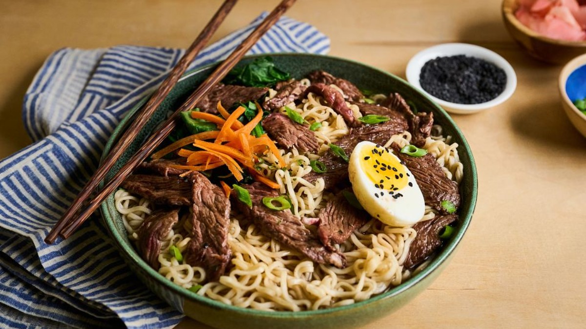

Beef Ramen Noodle Bowl

Like ramen? Then you'll love this beef ramen noodle bowl recipe. Top Sirloin Steak takes ramen to new heights.
Ingredients
- 1 beef Top Sirloin Steak Boneless, cut 1 inch thick (1 pound)
- 1 teaspoon pepper
- 2 packages (3 ounces each) beef or Oriental-flavored ramen noodles
- 2 teaspoons vegetable oil, divided
- 4 cups water
- 1/2 cup finely chopped onion
- 2 tablespoons minced garlic
- 1 tablespoon grated fresh ginger
- 1 tablespoon miso paste (optional)
Toppings:
- Boiled egg
- Shredded carrots
- Bean sprouts
- Sugar snap peas
- Fresh mushrooms
- Green onion
- Baby spinach or bamboo shoots (optional)
Garnish:
- Cilantro or basil
- Hot chili sauce
- Pickled ginger
- Sesame seeds
- Dried seaweed (nori)
- Lime wedges (optional)
Steps
- Cut beef Top Sirloin Steak lengthwise in half, then crosswise into 1/8 to 1/4-inch thick strips. Combine beef, pepper and 1/2 teaspoon seasoning from 1 ramen noodle package. Reserve remaining seasoning from packet for broth; discard second seasoning packet.
- Heat 1 teaspoon oil in large nonstick skillet over medium-high heat until hot. Stir-fry half of beef 1 to 2 minutes or until beef reaches an internal temperature for medium rare(145°F), stirring occasionally. Remove from skillet. Repeat with remaining 1 teaspoon oil and beef. Remove from skillet; keep warm.
- Combine water, onion, garlic, ginger and reserved seasoning from packet in same skillet. Bring to a boil; reduce heat and simmer 2 minutes. Add noodles. Bring liquid to a boil; reduce heat and cook according to package directions or until noodles are al dente, about 3 minutes. Stir in beef; add miso, toppings and garnishes, as desired.
source
Home